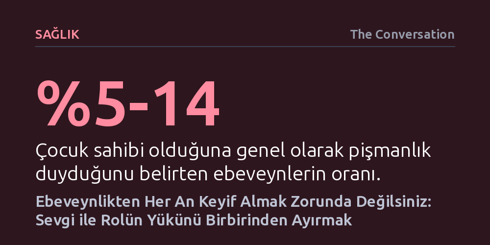

SAGLIK · The Conversation · 2026-10-21
Araştırmalar ebeveynlerin yaklaşık üçte birinin zaman zaman çocuk yetiştirmekten pişmanlık duyduğunu ve aşırı yorgunluğun yaygın olduğunu gösteriyor. Bir dönemin zorluğundan bunalmak çocuğu sevmemekle değil, tükenmişlik ve destek eksikliğiyle ilgilidir.
Çocuk yetiştirirken zorlanmanın ve bundan keyif almamanın bir ebeveynlik kusuru değil, ağırlaşan şartların ve yalnızlaşmanın doğal bir sonucu olduğunu fark ettirir.

Toplumda ebeveynliğin insan hayatındaki en tatmin edici ve ödüllendirici deneyim olduğu yönünde güçlü bir anlatı hakimdir. Buna karşın çevrim içi ebeveyn forumlarına ya da dürüst itiraflara bakıldığında, anne ve babaların çocuk yetiştirmenin farklı evrelerinde ciddi biçimde zorlandığı ve bu rolden hiç zevk almadığı sıkça görülür. Yenidoğan dönemindeki kronik uykusuzluk, küçük çocukların öfke nöbetleri veya ergenlik krizleri, bu hissin dönemsel olarak su yüzüne çıkmasına yol açar.
Akademik araştırmalar da bu duyguların sanılandan çok daha yaygın olduğunu kanıtlıyor. Ebeveynlerin yaklaşık yüzde 5 ila 14'ü genel olarak çocuk sahibi olduğuna pişman olduğunu belirtirken, yüzde 29'a varan bir kesim zaman zaman bu pişmanlığı hissettiğini dile getiriyor. Uzmanlar burada hayati bir ayrımın altını çiziyor: Hissedilen bu bıkkınlık ve pişmanlık çocuğun varlığına değil; uykusuzluk, kişisel fedakarlıklar, eş seçimi veya çocuk sayısı gibi ebeveynliği çevreleyen ağır koşullara yöneliktir.
Ebeveynlik sürecinde yaşanan keyifsizliğin temelinde çoğu zaman fiziksel ve zihinsel tükenmişlik yatar. Avustralya'da 10 bin ebeveynle gerçekleştirilen kapsamlı bir araştırma, anne ve babaların neredeyse yarısının aşırı yorgunluk nedeniyle arzu ettikleri gibi bir ebeveyn olamadığını ortaya koyuyor. Özellikle ilk bebeklik döneminde annelerin üçte ikisi, babaların ise önemli bir bölümü yüksek düzeyde bitkinlikle mücadele ediyor. Kronik sağlık sorunu veya engeli olan çocukların ailelerinde ise bu stres seviyesi çok daha üst basamaklara tırmanıyor.
Sorun yalnızca uykusuzlukla sınırlı değildir; kişinin kendine vakit ayıramaması, anne-babalık dışındaki bireysel kimliğini yitirmesi ve bitmek bilmeyen zihinsel planlama yükü bu rolün keyfini gölgeler. Üstelik modern dünyada geniş aile ve komşuluk desteğini ifade eden o geleneksel dayanışma ağı çoğu aile için artık mevcut değildir. Sosyal medyada sergilenen tertemiz evler, güler yüzlü çocuklar ve her daim sabırlı ebeveyn portreleri ise gerçek hayatla kıyaslandığında derin bir yetersizlik ve suçluluk duygusu yaratır.
Ebeveynlerin hissettiği suçluluk yükünü hafifletmenin ilk adımı, çocuğu sevmek ile çocuk bakımının getirdiği zorunluluklardan hoşlanmak arasındaki farkı kavramaktır. Bir çocuğa sonsuz sevgi ve bağlılık duymak; her sabah beslenme çantası hazırlamaktan, bitmeyen kardeş kavgalarını yatıştırmaktan veya uykusuz gecelerden keyif almayı gerektirmez. Çocuk gelişiminde hedeflenen standart her anından zevk alan kusursuz bir ebeveyn olmak değil, psikolojide tanımlandığı şekliyle "yeterince iyi" bir bakım sunabilmektir.
Mükemmeliyetçi beklentileri bir kenara bırakıp yaşanan hisleri bastırmadan adlandırmak ebeveyn üzerinde dönüştürücü bir rahatlama sağlar. Bir eşe, dosta ya da uzmana dönemsel olarak bu rolden zevk almadığını itiraf edebilmek utanç duygusunu hafifletir. Anne-babalığın her angaryasını sevmek zorunda olmadığını kabul eden bir yetişkin, çocuğuyla paylaşacağı bir masal saati ya da kısa bir yürüyüş gibi küçük ve samimi bağ kurma anlarına çok daha kolay odaklanabilir.
Bu yıpratıcı dönemi atlatabilmek için pratik adımlar atmak şarttır. Eşten, aileden ya da yakın çevreden yardım isterken genel yakınmalar yerine net ve somut görev paylaşımları talep edilmelidir. Ebeveynlik sorumluluğundan tamamen arınmış kısa molalar vermek, uyku ve beslenme gibi temel ihtiyaçları gözetmek zihinsel dayanıklılığı yeniden inşa eder. Unutulmamalıdır ki çocukların gelişim evreleri hızla değişir; çocuklar büyüyüp bağımsızlaştıkça pek çok ebeveyn kaybettiği yaşama sevincini ve bu rolden aldığı keyfi yeniden kazanır.
Bununla birlikte yaşanan isteksizlik ve kopukluk hali haftalarca sürüyorsa ve geçici bir evre olmaktan çıkmışsa dikkatli olunmalıdır. Çocuğa duygusal tepki vermekte, onunla oynamakta veya temel bakımını üstlenmekte derin bir yetersizlik yaşanıyorsa, durum ebeveyn tükenmişliğine, anksiyeteye veya depresyona işaret ediyor olabilir. Böyle anlarda bir aile hekimine veya bir uzmana başvurarak profesyonel destek almak ebeveynin hem kendisi hem de çocuğu için atabileceği en sağlıklı adımdır.